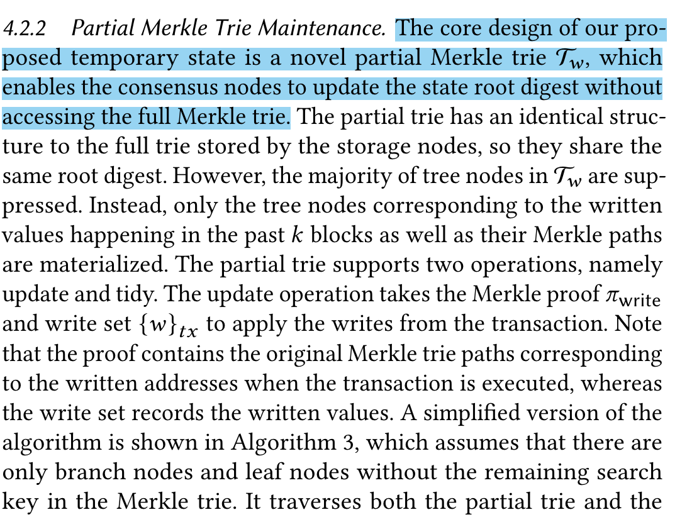

写在最前面——清晰写作的基本原理
- 写作逻辑的通行法则：
- 一个好的文段的写作，需要具备以下四点
- 背景（Situation），冲突（Conflict），问题（Question），答案/结论（Answer）
- 背景：为什么你需要做这个，这个东西的重要性在哪？
- 冲突：现有方法的做法为什么不能解决问题？难点在哪？
- 问题：那我该怎么做才能解决现有的问题和挑战呢？
- 答案：应该按照......的做法。
- SCQA写作法是通行的，尤其在引言、方法、相关工作的写作中尤为明显
- 一段话只负责一个语义高度内聚的逻辑块
- 使用总分结构，将这一段的简要内容直接提炼到第一句，后续再针对这一句进行展开。
- 以SlimChain为例（以蓝色标注）：
 - 这一部分的写作规范，好处如下：
- 在自己写作过程中能更快的找到相应的段落、快速梳理自己的写作逻辑
- 审稿人、读者能够很清晰的掌握你的文章描述的进度
- 无论哪一种，都归结为一句话：好文章的认知成本通常较低
- 体现在读起来酣畅淋漓、一气呵成、回味无穷
- 审稿人通常具有一定的身份地位，他们很忙，而且无偿进行审稿，快速让他们理解文章，能够使审稿人更加公正合理的评价你的文章。想想你们的审稿意见是不是出现过，明明我写了，但审稿人眼瞎没看到这部分细节？这类型问题能够通过好的文章写作结构尽量避免。
文章写作的线索
- 文章的线索：
- 为了理解文章线索，首先我们需要明白：你的贡献≈你的创新点，这需要通过实验或者理论证明。
- 研究Gap → 你提出研究的问题 → N （你的具体解决方法 → 实验验证通过 → 创新点 → 贡献）
- 你发现的研究Gap → 你提出需要被研究的问题（这往往就是一句话的事情）
- 你提出需要被研究的问题 → 你提出的方法在具体工作和实现上的挑战和难点（这可能有多个）
- 你提出的方法的有效性的实验证明或必要的理论支撑
- 你提出的被证实有效的新方法 → 创新点 → 贡献
- 这里，文章的线索有N条，他们在（你提出研究的问题 → 你的具体解决方法 ）这里分叉开来了
- 特别强调：你所要研究的问题在实现过程中遇到的困难 → 挑战、难点
- 这里要特别指出，挑战和困难是你在解决问题过程中所遇到的难点，而不是你提出的研究的问题本身或者研究领域本身有什么难点。
- 如果这一点没抓住，没写好，就会出现所谓“创新性不足”的评价，那是因为你在用陈词滥调的领域难点作为你要解决的难点，而相关的工作多如牛毛，不差你一个。点出你的方法具体执行上遇到了什么问题，提供了什么解决领域难点的新思路，并且实验证明你的方法的有效性，这样才能被称为“对领域有贡献”，没有贡献的工作，哪个期刊会愿意收呢？
- 以VLDB2021文章SlimChain为例说明：
- 领域难点：区块链系统存在数据高度冗余备份的问题，花费了巨大的存储空间。而分片只能常数级别的降低存储开销。
- 解决问题中的难点：提出使用无状态区块链的思想，但是具体上：（1）无状态区块链本身目前还没支持交易的并行执行，其吞吐量较小；（2）现有的无状态区块链没有支持智能合约。
- 通过这两点的描述，很容易就能发现研究Gap：
- 原有的：现有区块链存储大，支持智能合约，交易并行度不高
- 现有的：无状态区块链存储小，不支持智能合约，交易并行度不高
- 期望提出的：使用存储小的无状态区块链、实现智能合约的支持、实现并行交易执行
- 显然，在这两个难点上，领域难点是大方向，你做的问题应该要围绕领域难点，提出你自己的解决方案，而在实现这个解决方案的时候，你一定会遇到一些需要你解决的问题，这些问题就是你的挑战、难点。能够写在论文上的贡献，是围绕“挑战、难点”去凝练的。
- FAQ：如果我觉得解决问题的时候没有遇到挑战怎么办？那你得想想你的问题是否找对了，或者说这个问题也许人家已经很好的解决掉了。前者可能与文章本身的动机相关，后者与创新点相关。这两者是不能出问题、存在硬伤的，否则文章的上限就不会高过中科院三区。这个涉及到文章选题的问题，后续我会进一步总结如何做到高质量的选题。
- 这里要特别指出，挑战和困难是你在解决问题过程中所遇到的难点，而不是你提出的研究的问题本身或者研究领域本身有什么难点。
文章写作的建议顺序
- 我这里通常强调自底向上，为的是尽量提高大家写作时候的逻辑统一性，使得大家在凝练困难和挑战、自己的贡献的时候，更为清晰准确。
- 顺序如下：方法部分→实验部分→问题定义与解决方案总览→引言→摘要和总结→相关工作
- 相关工作放在最后是因为，这部分在实践中往往是一个填充的作用，根据文章版面要求和美学角度的考虑，确定该部分的写作长度。
- 为什么这么建议？因为方案成型了并且实验验证通过后，那么恭喜你，你可以开始整理工作撰写文章了。这个时候，你对你的方案是最为自信的时候，写这一部分也是最为平铺直叙的一部分，实验部分次之。相应的，方法部分和实验部分成型也就意味着，你能够获得的结论和你的“困难和挑战”已经有了一个大致的雏形，这时候就可以开始进一步的整理凝练了。
- 相关工作其实是最好写的，因为前期的调研工作本身，就是相关工作的写作素材。
方法部分写作指南
- 方法部分的写作要与文章提到的挑战、难点以及与相关的贡献存在对应关系。
- 方法部分的写作一般分为如下四步：
- 注意：这将会成为你写文章草稿或者构思时候必须要想清楚的问题，逐个Step列好草稿，你的文章将会水到渠成。按照我的方法来，你的文章就成了填空题，大幅度降低写作难度、提高写作速度、提升写作逻辑水平。显示出更高的“专业度”，就不会被“Desk Reject”；提高写作逻辑，能够突出创新点，从而大幅度提高录用率。
- Step 1: 阐述你提出这个方法的背景是什么。你为什么要提出这个方法？需要解决的困难和挑战是什么？
- Step 2: 基于什么样的观察和思考，促使你打算提出一个新的方法？
- Step 3: 你的方法具体是怎么做的？
- 写完这个部分，请进行自我检查，检查如下要点是否已经讲述清楚！
- Check List：
- 你需要解决的问题是否已经被描述清楚、或者被严谨的公式所定义
- 你所提出的方法的输入是什么，输出是什么？
- 你的描述，是否按照从输入到输出的正常逻辑流展开？
- 你是否有一定的解释，让读者能够明白你的方法为什么能够起作用、解决问题？
- 是否有例子和图，在必要的地方解释你的方法的关键步骤？
- Step 4: 给你的方法一个简单的小总结，简单说明你的方法能够起到什么样的效果。这一部分也承担承上启下的作用，有时候提出一个方法，也可能会带出另一个需要解决的问题。
实验部分写作指南
- 实验部分的习作也是高度的八股文，遵循一定的逻辑，与雅思小作文写作非常类似。
- 实验部分是为了证明你的所提出的贡献的真实性和有效性，在此基础上围绕如下因素展开：
- 你提出的方法的有效性（e.g., 消融实验、Baseline对比实验）
- 你提出的方法对超参数的敏感性（i.e., Hyper-Parameters Analysis）
- 你提出的方法的复杂度分析（i.e., 运行时间、可扩展性、时空开销等）
- Case Study [顶刊文章、超顶级A会]，通过代表性案例说明你的方法为什么有效
- 实验部分的写作基于如下四步：
- Step 1: 你的实验为了探讨什么？你的实验的参数是如何设计的（与默认参数不同才需要重点展开写，否则，就说你的实验参数设置是默认的（默认参数配置请在Experiment Settings中介绍））
- Step 2: 你的实验表格或者图表中，主要的趋势、特征是什么。
- Step 3: 你的实验表格或者图表中，细节一些的趋势和特征是什么。
- Step 4: 你能够从你的实验表格中获取什么样的结论，有哪些深入的观察和思考？(这就是所谓的Insight，好的Insight是文章的超级加分项）
- 什么是实验表格和图表中的主要、细节的趋势和特征？
- 主要特征的范畴：Selecting & Make Comparison
- 数值方面：最大值、最小值、等值、差值、倍数、大于、小于 【体现比较】
- 趋势方面：上升、下降、波动、稳定 【仅适用于动态图】
- 注意：波动指的是围绕一个固定值上下变化
- 注意：年龄段分组不属于趋势！！
- 幅度方面：
- 比较两个单独的数值之间的差异：大、小
- 比较两个趋势之间的变化：剧烈、平缓
- 细节段：
- 因为不可能针对每一个被对比的方法和数值进行阐述，最好的办法是分组打包进行描述
- 分组方法：
- 按照时间划分：e.g., 某个月份之前/之后
- 按照排名划分：e.g., 排名对应的数值出现断层
- 比较对象本身：e.g., 比如按照only/ 2+ ；地理位置；性别；年龄分组
- 不同图表：题目中存在两张图
- 引导词：
- 描述对象不一致：As for X; Concering Y
- 相似或者相反：Similarly; Likewise; By Comparison; By Contrast; On the other hand;
- 题目中有两个图表：As shown in the first/second chart
- 主要特征的范畴：Selecting & Make Comparison
论文引言写作指南
- 论文引言是论文的门面、招牌，对论文的影响是最大的。好的引言如同引人入胜的电影开头，根本停不下来。
- 实际上，论文的引言的构思主要可以通过定义SQCA四部分完成：
- 基于SCQA架构的引言结构，以LightNestle为例：
- 背景（S）= 张量填充是连接网络测量与网络运维管理的关键一环。由于网络测量是一个持续不断的长期过程，对所有端到端节点对的采样的开销是巨大的，因此网络测量数据往往是稀疏的，为了使得下游任务能够基于完整的采样数据开展，需要先对稀疏的测量数据进行填充。
- 冲突（C）= 尽管其他方法也取得了相当不错的精度，但他们都没有关注张量填充模型的重训练开销。而填充一个随时间拓展的长张量存在挑战，主要是训练方式上：
- 完全的重新训练，可能需要花费大量的时间和空间
- 只在新数据上训练，丢失过往的信息，面临严重的数据稀疏性，训练速度一般
- 微调训练法，训练速度快，但过往的信息随着参数微调逐步丢失
- 问题（Q）= 是否存在解决方案，在保留历史信息的情况下，快速的更新张量填充模型？
- 答案（A）= 我们提出了LightNestle模型，采用分段顺序填充的方式，为了提高训练速度和充分利用历史信息，引入了元学习模块，在不需要完整重新训练的情况下，快速的更新且能够很好的利用历史数据。
- 可以结合LightNestle的文章看，我是如何在整个引言里，融入SCQA整理出来的内容的
- 注意：SCQA是在帮助你构建引言的写作思路，具体在文章上写作的时候，请按照下面的部分构建，将SCQA的思想有机的融合。
- 基于SCQA架构的引言结构，以LightNestle为例：
- 这一部分的写作其实也是高度套路化的，遵循如下主要部分:
- 【S】你所研究的主题的背景介绍（一般3-5句话）
- 【S】背景→主要的研究问题（以叙述清楚为准）
- 【C】主要的研究问题中，其他现有方法进展如何？存在什么缺陷？为什么不能很好的解决你所想解决的问题？【Q】而你想要实现的目标是什么？（以叙述清楚为准）
- 【A】你提出的方法的简要介绍。注意：你的方法的简要介绍要围绕着上边所述的“其他方法存在的缺陷”展开，突出你的方法是如何解决他们的问题的。每个方法在1-2句话，因此务必高度概括、突出核心思想。
- 【模板】文章的创新点是什么。注意：请根据我在“文章写作的线索”中所描述的方法，提炼创新点，一般需要3-5个。
- 【模板】文章后续的章节内容安排。（完全是模板话术）
- 引言部分中，请务必突出自己研究的问题具备的价值，以及阐述清楚其他方法为什么没法解决你的问题，这是审稿人初步看你的文章，最希望快速的了解到的内容！
论文摘要写作指南
- 论文摘要一定不要先写！论文摘要一定不要先写！论文摘要一定不要先写！否则你会后悔的！！
- 论文摘要的总体格式：SCQA + 实验结果
- 论文摘要其实很好很好写，不信你看看：
- 根据我提供的写作顺序，你已经有了写好了的论文引言（Introduction）
- 摘要，就是Introduction的简化版本！
- 还记得你构思Introduction时候写的SCQA吗？
- 如果你根据SCQA分别用2-3，2-3，1-2，3-5句话去简要的描述，你就已经有8-13句话了，最后你再加上你的实验结果的简要描述（2-3）句话，你就有10-16句话了。
- 按照一句话平均15个词的方式计算，你的摘要150-210个词就已经轻松写出来了。
- 我所知道论文摘要大致在200个词左右（IEEE TMC要求不超过200个词）（建议≤250词）
- 当然你想拓展字数也很简单，因为你的Introduction已经写好了，你有足够的材料支持你拓写。
论文总结写作指南
- 论文总结写作方式还是类似于论文摘要，也是SCQA+实验结果的方式。
- 不同之处在于，更侧重于A的展开，也就是更多的介绍在文中你提出的方法
- S、C、Q可以一笔带过
- 实验结果也可以一笔带过
- 【可选项】最后，需要提出你的文章后续可以扩展的研究方向。
- 摘要往往是看文章的时候最开始的开门材料，所以，有些术语和技术细节得收敛一些，尽量减少读者的阅读难度。但是，总结的时候，这些术语和技术细节已经被介绍过了，这个时候，不妨可以写的更专业一些。
相关工作写作指南
- 站在巨人的肩膀上，你能够看得更远。相关工作就是在介绍你研究工作的地基。
- 相关工作的细节部分往往按照你文章研究的核心高度相关的方向展开
- 假设你正在研究异构联邦学习的问题，你从其他领域发现了一个好方法，在AFL上提升明显
- 不好的例子：
- 文章主题：联邦学习的数据异构问题；
- 相关工作：深度学习；分布式学习；联邦学习
- 评价：写的太散、太泛。没有突出你的方法的相比其他工作的优点和不同点。这也就是所谓的“创新点”不够突出的问题。
- 好的例子：
- 文章主题：联邦学习的数据异构问题；
- 相关工作：
- 联邦学习中数据异构问题的其他工作（按技术发展路线写，而不要按照时间轴写）。这些技术路线之间，哪些好，哪些不好，不好在哪，你又是怎么做的？
- 其他领域的方法发展现状，突出其他领域的方法直接套用为什么不行，关键的问题在哪。
- 简单介绍下你的方法与其他类别的方法的联系与区别。
- 评价：写的很聚焦，不仅明确了自己工作在整个领域的知识体系中的位置，指出了其他领域方法与问题的相关性和不同点，还突出了自己工作的优势。
- 相关工作的写法：
- 遵循一类一议原则。
- 在刚才提到的单个技术的发展路线的基础上，进行对比和评议。
- 最关键的是，在对比其他技术路线的、评议别人的时候，需要突出自己的方法与他们的不同，以及自己相比较他们的优点。
- 这时候你一定会发现，在评议其他方法的时候，一定会涉及到文章线索中提到的“困难、挑战、问题”中的一些内容。是的，这个时候请不要吝啬笔墨，通过对比你的做法和别人的方法，突出自己的优势。
- 常用技术路线的发展，假设你的技术路线是基于D的：
- 线性发展（A→B→C→D）：
- 比如自然语言处理时候的，LTSM→Transformer→BERT→GPT
- 要点1：需要讲清楚发展路线上，为什么需要从A→B，B→C 转变（简单一句话就行）
- 要点2：讲清楚你的方法基于D的时候，还遇到了什么问题，同期的给予D的工作存在哪些不足？
- 要点 3：（可选项）你是否参考了其他领域的做法？他们领域的做法照搬过来有什么问题？
- 要点4：你打算怎么做？优点在哪，跟人家的区别在哪？
- 并行发展（A→B；C→ D）:
- 比如图像生成技术，AE&VAE → GAN；Diffusion → Stable Diffusion
- 要点1：讲清楚发展路线AE&VAE → GAN的演变，并且对这条路线进行优缺点的评价
- 要点2：讲清楚发展路线Diffusion → Stable Diffusion演变，并且讲清楚你为什么选择该路线，为什么这条路线比其他路线好？
- 要点3：在现有其他D类方法上，你发现了什么问题是其他同期工作解决不了的？
- 要点 4：（可选项）你是否参考了其他领域的做法？他们领域的做法照搬过来有什么问题？
- 要点5：你打算怎么做？优点在哪，跟人家的区别在哪？
- 聪明的你应该发现了，这也是一个SCQA写作法呀~
- 线性发展（A→B→C→D）：
- 遵循一类一议原则。
写作技巧的提高方法
- 阅读超高质量的超级A会的文章，
- 请不要参考人工智能方向的文章的写作思路，这些文章创新点一般较为Incremental（所谓的A+B的创新）和陈词滥调。
- 推荐查看VLDB、SIGMOD、CCS的文章，尤其是VLDB和CCS。我推荐这个是因为涵盖了我们课题组要做的主要方向：
- VLDB：联邦学习、区块链系统、大型人工智能系统、先进数据结构设计；
- CCS：密码学、计算机系统安全、网络安全。
- 这里我只推荐了A会的文章，我不推荐看A刊的文章作为写作技巧提高的原因如下：（1）期刊相较会议，有相当大的回旋余地与宽容度；（2）期刊对于新思想、新任务、新方法的描述也许不是最新的，存在相当的延迟，而写作恰恰需要学会清晰地描述一个新事物。
- 通过上述阅读，选择一篇你最喜欢的、最欣赏的文章，作为你写作的模板。写作的时候，参照这他的来。具体如下，我在写作的时候，写到方法部分，我就打开模板，看看模板文章在方法部分的写作的时候，相应的段落写了什么，我相应的就也写什么，从而实现在叙述逻辑的清晰度上，复刻顶级文章
- 尽管很困难，但是，一定要逐步脱离“中文草稿→英文机翻→手工调整”的逻辑，否则，你的写作水平永远不会超过机翻很多。机翻很多时候语义和逻辑是错误的。训练方法也很简单，找到你相同领域的一篇顶级会议、期刊文章，尝试从人家的语句的基础上，替换成你做的工作的内容，尽量保留模板文章在连接词、造句方式上的内容。
- 关于查重率、抄袭的问题【这绝对不是抄袭，而是有机的借鉴，实际上，你借鉴的只是逻辑和叙述方式，你的工作内容（占文章内容的绝大部分）是不可能跟任何人有重复的】
- 我的经验表明，你只需要按照这个套路来两三次，你就可以完全脱稿自己写了。【这是一个明码标价的事情，只要你肯做，你就一定能够看到自己的提升，不多，也就两三次而已】【只要你肯努力，你就能超过绝大部分人，因为大多数群体并没有那么努力和上进，大家都只为了体面的活着而已】
写文章之前的准备工作
- 这一部分你可以先行准备，准备好了之后，按照我写的指南和要点，完成文章的写作
- 不妨先找一个Word文档，把下面的问题先整理整理，先给这些问题写一个回答。
- 方法部分：
- 对于每一个你提出的小方法
- 阐述你提出的方法的背景是什么？为什么要提出这个方法？需要解决的困难和挑战是什么？
- 基于什么样的观察和思考，促使你打算提出一个新的方法？
- 你的方法具体是怎么做的？
- 给你的方法一个简单的小总结，简单说明你的方法能够起到什么样的效果。
- 对于每一个你提出的小方法
- 实验部分：
- 对于每一个你设计的完成的实验
- 你的实验为了探讨什么？你的实验的参数是如何设计的
- 你的实验表格或者图表中，主要的趋势、特征是什么。
- 你的实验表格或者图表中，细节一些的趋势和特征是什么。
- 你能够从你的实验表格中获取什么样的结论，有哪些深入的观察和思考？
- 对于每一个你设计的完成的实验
- 引言部分:
- 【S】你所研究的主题的背景介绍
- 【C】其他现有方法进展如何？存在什么缺陷？为什么不能很好的解决你所想解决的问题？
- 【Q】而你想要实现的目标是什么？（以叙述清楚为准）
- 【A】你提出的方法的简要介绍。可以从上边的方法部分提纲提取。
- 【模板】你觉得你文章的创新点是什么。
- 方法部分：
- 如果你完成了上述的内容，不妨可以先冷静冷静，开始给这些部分添砖加瓦，补充必要的细节。
- 细节也补充完了，你可以开始按照该指南完成论文写作了，恭喜你！
如果后续还有什么内容希望我来补充，请与我联系。